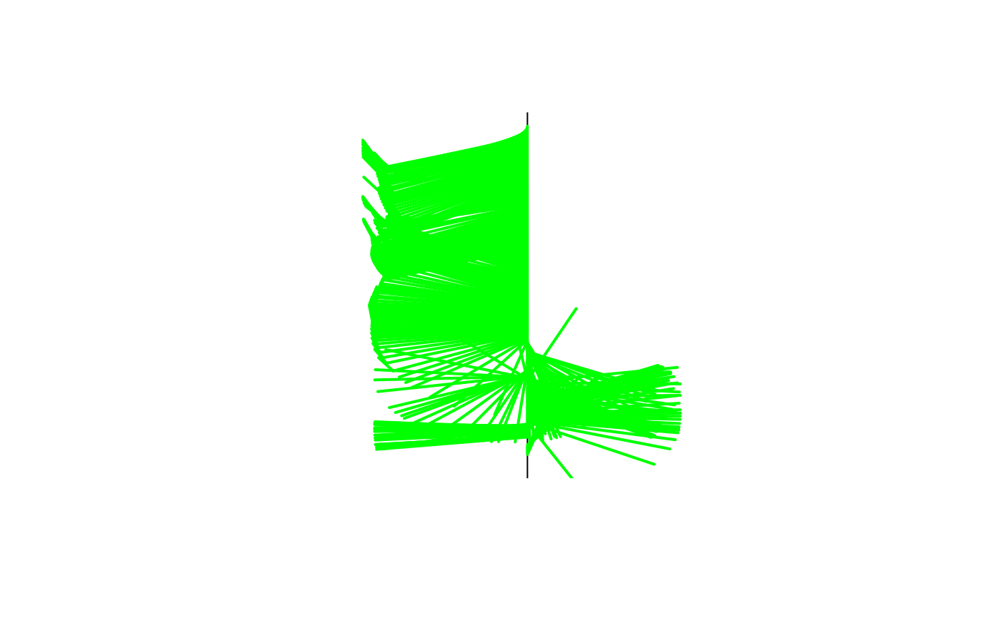
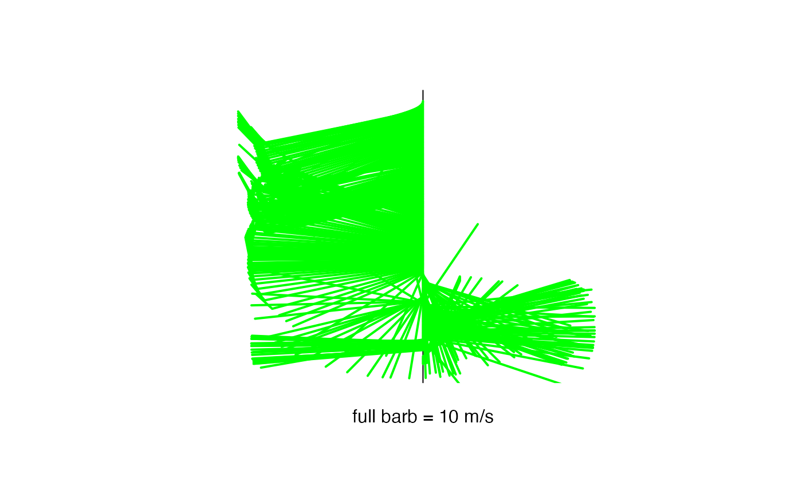

plotwind.RdCreates a wind profile in the standard atmospheric notation. Each full barb = 10 m/s, half barb = 5 m/s, and a filled triangle for 50 m/s. The maximum wind speed that can be plotted without amending the program is 65 m/s.
plotwind(dataframe, size=5, ylim=c(1050, 100), legend=FALSE)Data frame for sounding data, must have components for
wind speed wspd, wind direction dir,
and pressure press.
change the thickness of the plotted lines
plot extent, in units of pressure
explains wind barb strategy
the dataframe must have components for wind speed wspd,
wind direction dir, and pressure press.
Missing values may be coded as either NA or 999. and are
not plotted.
The standard atmospheric wind sybmol is a vector of fixed length
with barbs proportional to wind speed. A full barb for each 10 m/s,
half barbs for 5 m/s and a triangular barb for 50 m/s.
None -- creates a plot.
# Example 1:
data(ExampleSonde)
plotwind(ExampleSonde)

# Example 2:
plotwind(ExampleSonde, size = 7, legend=TRUE)
